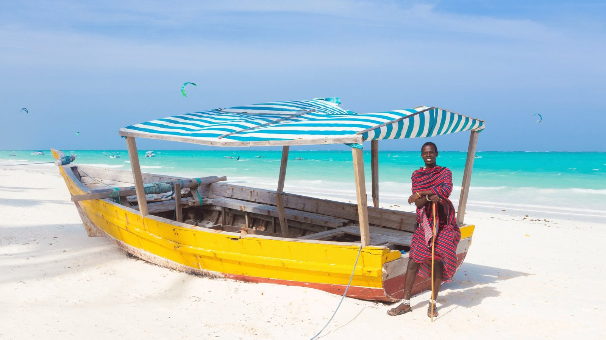
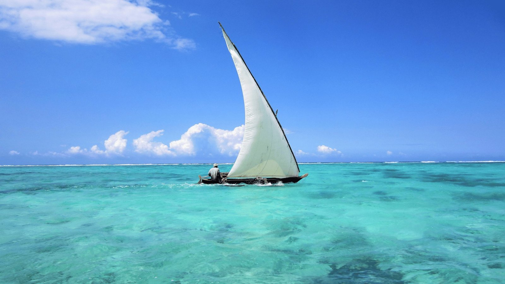
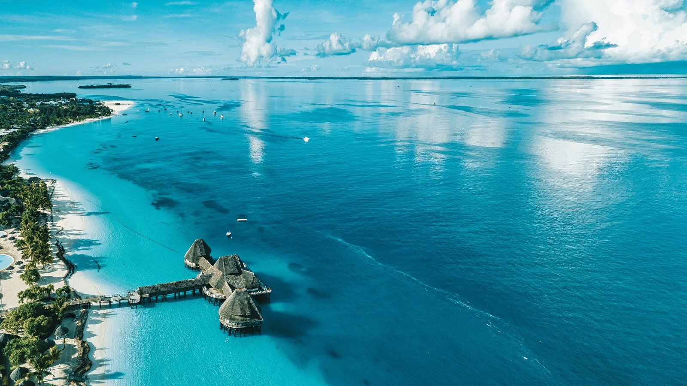
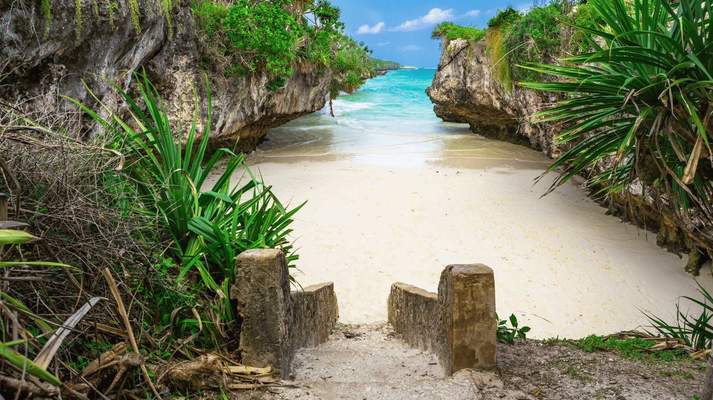
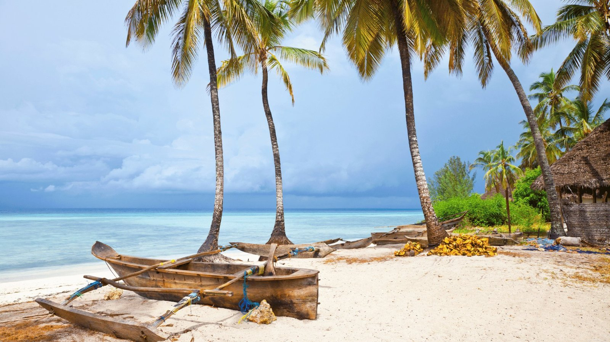
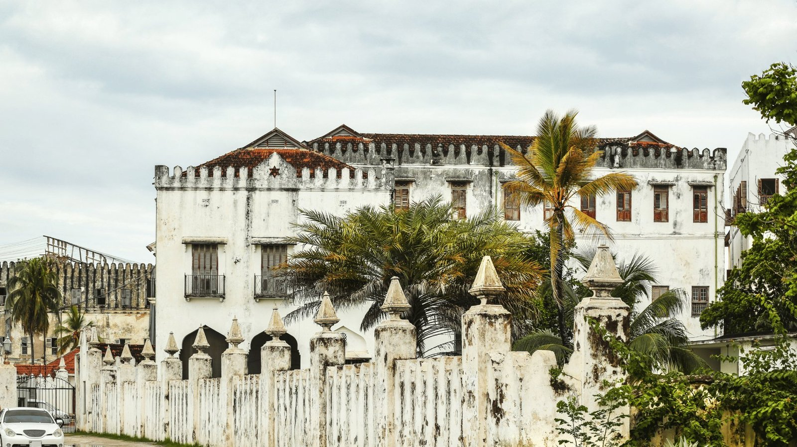

Alles was du wissen musst – von der Einreise bis zum Strand.
Bis zu 90 Tage – online oder am Flughafen erhältlich.
Seit 1.10.2024 gesetzlich vorgeschrieben.
Keine Pflichtimpfungen. Empfohlen:
Sansibar gilt als weitgehend malariafrei.
Tansanischer Schilling (TZS) – US-Dollar in Touristengebieten akzeptiert.
ATMs in Stone Town und Fumba Town verfügbar.
4G gut verfügbar. Lokale SIM am Flughafen empfohlen.
Kein Direktflug – beste Verbindungen über Dubai, Istanbul, Doha oder Nairobi.
Jeder Fahrer kennt Fumba Town. Preis: 15–25 USD.
Sehr nah. Taxi: 10–15 USD.
Taxi: 50–80 USD. Mietwagen empfohlen.
Eines der sichersten Reiseziele in Ostafrika.
Jeder Strand hat seinen eigenen Charakter – von lebhaft bis wildromantisch.

Nordküste · Lebhaft
Ostküste · Kitesurf

Nordwest · Entspannt

Nordost · Romantisch

Südwest · Fumba Town

Stone Town ist seit 2000 UNESCO-Weltkulturerbe. Verwinkelten Gassen, arabische Türen, Moscheen und Märkte erzählen von Jahrhunderten der Handelsgeschichte zwischen Arabien, Indien und Ostafrika.
Afrikas beste Street-Food-Kulisse – Seafood, Zanzibar-Pizza, Säfte.
Arabische und indische Schnitzkunst – Wahrzeichen Stone Towns.
Ehemaliger Sultanspalast – erstes Gebäude Ostafrikas mit Strom.
Nelken, Zimt, Vanille auf Plantagen – die Gewürzinsel live erleben.
Mnemba-Atoll – Rifffische, Schildkröten und Haie.
EinsteigerAfrikas bester Kitesurf-Spot. Schulen für alle Niveaus.
SportVon Kizimkazi – Schwimmen mit freilebenden Delfinen.
FamilieGeschichte der Gewürzinsel live auf Plantagen erleben.
KulturellUnvergesslich bei Sonnenuntergang auf der Ostküste.
ErlebnisMikumi oder Selous – kombinierbar mit Strandurlaub.
AbenteuerFumba Town Beach Club oder Dhow-Bar Stone Town.
EntspannungKuza Cave (Süßwasser) oder Kayaking.
Natur~27°C ganzjährig. Zwei Regenzeiten bestimmen den besten Reisezeitraum.
Große Trockenzeit, 25–27°C, ideal für Strand und Outdoor. Hochsaison.
Kurze Trockenzeit, 28–29°C. Weihnachten/Silvester – früh buchen!
Masika: intensive Regenfälle. Niedrigste Preise.
Vuli: kurze Regenzeit, günstigere Preise, weniger Touristen.
Erfahre alles über Fumba Town, Steuervorteile, Residenzoptionen und wie du auf Sansibar ein neues Leben beginnen kannst.
Investieren & Leben entdecken →